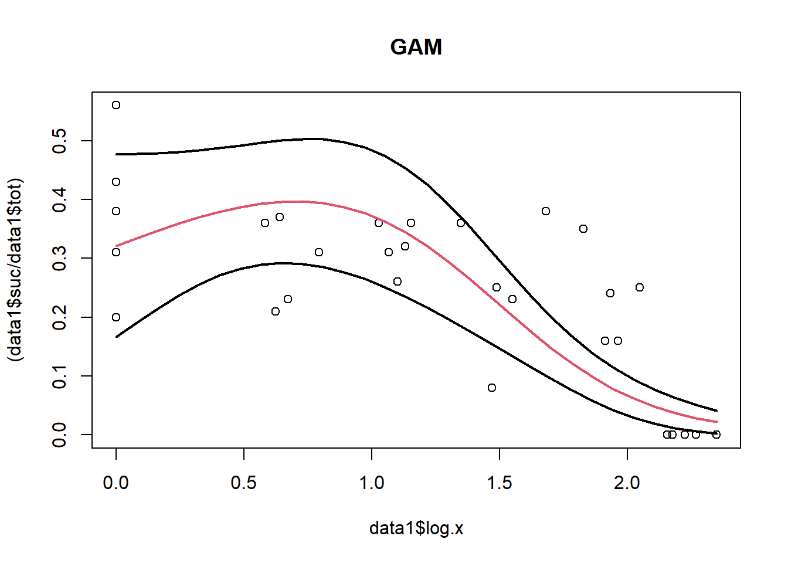

Similar to my previous blog on deriving ‘Effect Concentrations’ from GLMMs, this blog details a way to code bootstrapped 95% CI from GAMMs and their bootstrapped ECx. I know of no method to extract ECx from GAMMs analytically like we can for GLMMs, so here I interpolate from the predictions. This isn’t super accurate but the error will be quite small – make sure to keep the prediction length >100 though.
This dataset doesn’t really require a GAMM, I’ve just used it for demonstration purposes. I’ve added an observational-level random effect, which is typically used for tank experiments.
Lets load in some data.
Running Code
When you click the Render button a document will be generated that includes both content and the output of embedded code. You can embed code like this:
# Load packages (if not installed Tools->Install Packages)library(mgcv)
Loading required package: nlme
Warning: package 'nlme' was built under R version 4.4.2
This is mgcv 1.9-1. For overview type 'help("mgcv-package")'.
library(lattice)library(MASS)
Warning: package 'MASS' was built under R version 4.4.2
library(MuMIn)
Warning: package 'MuMIn' was built under R version 4.4.2
data1 <-read.table(file="https://raw.githubusercontent.com/gerard-ricardo/data/master/2015_uppersurface", header=TRUE, dec=",")#data1# 2 Labeling and wrangling -----------------------------------------------data1$sus_sed <-as.numeric(as.character(data1$sus.sed))data1$log.x <-log10(data1$sus_sed) #log10 transdata1$fert <-as.numeric(as.character(data1$fert))data1$suc <- data1$fertdata1$tot <-as.numeric(as.character(data1$tot))data1$obs <-factor(formatC(1:nrow(data1), flag="0", width =3))# unique tank ID for later ondata1$log.x <-ifelse(data1$log.x <0.1, 0, data1$log.x) #Replace neg with zero
Next let’s fit a regular GAMM for demonstration sake. Here we are fitting a GAMM, and predicting along raw.x in the data.frame df1. We convert the predicted SE to approximate 95% CI by multiplying them by 1.96.

The code used to interpolate the ECx is below. This function calculates the ECx from the maximum of the curve. It simply works by finding the nearest value in the prediction data.frame to X% of the maximum response, and then the corresponding value in the predictor column. If you have a unimodal ‘hump-shaped’ trend, it will only calculate one ECx (I think).
ecx.interp <-function(ecx, df1) { inhibx <-max(df1$pred) * ecx nearest_idx <-which.min(abs(df1$pred - inhibx)) df2 <-data.frame(ecx = df1$log.x[nearest_idx],lower = df1$log.x[which.min(abs(df1$lo.ci - inhibx))],data = df1$log.x[which.min(abs(df1$up.ci - inhibx))] )return(df2)}ecx.interp(0.5, df1) #this is the ECx calculate between the top and 0.
ecx lower data
1 1.539123 1.296103 1.701136
Ok, now for a GAMM with bootstrapped 95% CI. Make sure to keep sims = as multiple of 200, otherwise the CIs can’t calculate properly. Ideally your finally attempt will want around 1000 otherwise the CIs will look wobbly, like below.
Here we have the code above wrapped into a function called m2.gamm, which outputs the prediction. In the for-loop, we resample the raw data.frame and then apply this function. The prediction is stored into a list and then a data.frame called df3. This data.frame is then ordered and next subset by the 0.025 (2.5%) or 0.975 (97.5%) columns. Because columns are integers, make sure your sims multiplied by these proportions result in an integer e.g. 200.
set.seed(123)lst =list() #initial listfit_gam <-function(resampled) { m2.gamm <-gamm(cbind(suc, (tot - suc)) ~s(log.x, fx = F, k =3),random =list(obs =~1),family = binomial,data = resampled,method ="REML",verbosePQL = F) pred.md1 <-predict(m2.gamm, newdata=df1, type ="response",se.fit=T) out =unname(pred.md1$fit)# lst[[1]] = dd# return(lst)return(out)} #gam function returns prediction#Now resample the residuals x timesresid_gam <-residuals(m2.gamm$gam, type ="response")sims =200for (i in1:sims) { resampled_resid <- resid_gam[sample(length(resid_gam), replace =TRUE)] new_response <- m2.gamm$gam$fitted.values + resampled_resid resampled_data <- data1 resampled_data$suc <-round(pmin(pmax(new_response * resampled_data$tot, 0), resampled_data$tot)) #pmax prevents values less than 0 out <-fit_gam(resampled_data) lst[[i]] <- out}#lst #returns all predictions in listdf3 <-do.call(rbind, lst) #add this to 'loop into a list'#df3 #so all the predicted fits from the x simulations are stored as rows in this list
Now lets see how each resampled curve looks
# plot output of predictionsdf4 <-as.data.frame(lst)df4$log.x <- df1$log.x# df4$log.xlibrary(tidyverse)
Warning: package 'tidyr' was built under R version 4.4.2
Warning: package 'readr' was built under R version 4.4.2
Warning: package 'purrr' was built under R version 4.4.2
Warning: package 'stringr' was built under R version 4.4.2
Warning: package 'lubridate' was built under R version 4.4.2
── Attaching core tidyverse packages ──────────────────────── tidyverse 2.0.0 ──
✔ dplyr 1.1.4 ✔ readr 2.1.5
✔ forcats 1.0.0 ✔ stringr 1.5.1
✔ ggplot2 3.5.1 ✔ tibble 3.2.1
✔ lubridate 1.9.4 ✔ tidyr 1.3.1
✔ purrr 1.0.4
── Conflicts ────────────────────────────────────────── tidyverse_conflicts() ──
✖ dplyr::collapse() masks nlme::collapse()
✖ dplyr::filter() masks stats::filter()
✖ dplyr::lag() masks stats::lag()
✖ dplyr::select() masks MASS::select()
ℹ Use the conflicted package (<http://conflicted.r-lib.org/>) to force all conflicts to become errors
data1.long <- df4 %>% tidyr::pivot_longer(-log.x, names_to ="factors", values_to ="meas") %>%data.frame() # keep vec.x, add all other columns to factors , add all their values to meas)ggplot(data1.long, aes(x = log.x, y = meas, color ="steelblue1", group = factors)) +geom_line() +# geom_point(aes(y = meas)) +labs(x ="Predictor", y ="Response", title ="Multiple Model Fits") +theme_minimal() +theme(legend.position ="none")
Let’s take the 2.5% and the 97.5% lines to see the bootstrapped CIs
# ordering and take the bottom 2.5% and top 97.5% lineseta <-0.5* simslowerCI <-0.025* simsdataCI <-0.975* simsbb_se1 <-apply(df3, 2, function(X) X[order(X)]) # orders the predictions from lowest to highestdf1$boot.pred <- bb_se1[eta, ] # find the bottom 2.5%df1$boot_lo <- bb_se1[lowerCI, ] # find the bottom 2.5%df1$boot_up <- bb_se1[dataCI, ] # find the top 2.5%# plottingplot(data1$log.x, (data1$suc / data1$tot), main ="GAM") # second plotlines(df1$log.x, df1$boot.pred, type ="l", lwd =2, col =2, xaxt ="n", las =1) # plot model mean linelines(df1$log.x, df1$boot_lo, type ="l", lwd =2, xaxt ="n", las =1) # plot data2 95% CIlines(df1$log.x, df1$boot_up, type ="l", lwd =2, xaxt ="n", las =1) # plot lower 95% CI
With that in mind, we can now bootstrap the ECx.
Just to recap:
1) we fit a GAMM to the data
2) we extracted the residuals and resampled them
3) made new predictions from the resampled residuals
4) repeated this 200 times
Ok. Let resample just once to see how it look, but keeping everything in a function, which we will need below.
set.seed(123)lst1 <-list() # initial listfit_gam2 <-function(resampled, ecx) { m2.gamm <-gamm(cbind(suc, (tot - suc)) ~s(log.x, fx = F, k =3),random =list(obs =~1),family = binomial,data = resampled,method ="REML",verbosePQL = F ) pred <-predict(m2.gamm, newdata = df1, type ="response", se.fit = T) df2 <-data.frame(log.x = df1$log.x, pred = pred$fit) ecx.interp2 <-function(ecx, df2) { inhibx <-max(df2$pred) * ecx nearest_idx <-which.min(abs(df2$pred - inhibx)) ecx <- df2$log.x[nearest_idx]return(ecx) } out1 <-ecx.interp2(ecx, df2) out <-unname(out1)# lst[[1]] = dd# return(lst)return(out)} # gam function returns predictionfit_gam2(resampled_data, 0.5)
[1] 1.539123
Now let’s run it in a loop for each resample
# Now run in loop for simsecx <-0.5sims <-200for (i in1:sims) {# resampled = data2[sample(nrow(data2), replace = TRUE), ]# out = fit_gam2(resampled, ecx)# lst[[i]] = out resampled_resid <- resid_gam[sample(length(resid_gam), replace =TRUE)] new_response <- m2.gamm$gam$fitted.values + resampled_resid resampled_data <- data1 resampled_data$suc <-round(pmin(pmax(new_response * resampled_data$tot, 0), resampled_data$tot)) # pmax prevents values less than 0 out <-fit_gam2(resampled_data, ecx) lst[[i]] <- out}# lst #returns all predictions in listdf3 <-unlist(lst)# df3hist(df3)
plot(density(df3)) # density plot
df4 <- df3[order(df3)]df1$boot.pred <- df4[eta] # find the bottom 2.5%df1$boot_lo <- df4[lowerCI] # find the bottom 2.5%df1$boot_up <- df4[dataCI] # find the top 2.5%# df1